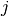
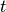
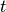

Intelligence
0.0.8
Intelligence
0.0.8
Mean-field is a concept in statistical mechanics to approximately treat the many body problem. It is an effective theory.
In paramagnetic materials, the “polarized” spins determine the overall “magnetization” of the material. When the spins are all aligned, we get the maximium “magnetization”. If the directions of the spins are completely random, the material is not “magnetized”. In other words, we can use a quantity , which is called magnetization, to represent how well the overall “magnetization” of the material is.
For simplicity, we assume that the spins can only be up (s=1) or down (s=-1).
The idea of mean-field is to treat each spin as a mean-field  and the fluctuations around this mean-field. Mathematically speaking
and the fluctuations around this mean-field. Mathematically speaking
where is the so called fluctuations. This treatment of the material requires the material to be homogeneous. Under the condition of homogeneous material, we can think of all the spins are the same. Thus we can look at one spin and all other spins become a background environment of this particular spin. This background environment is called mean-field which provides a potential field to interact with.
On the other hand, the average of spins is equivalent to the ensemble average of this particular spin
where is calculated by the Boltzmann distribution,

So we need to calculate the energy of the spin first. Using the Hamiltonian for spins
where is the total magnetic field including the mean-field. This energy finally becomes
where  is the number of spins interacting with .
is the number of spins interacting with .
Mean-field theory assume a homogeneous background, the summation of fluctuations, should be 0.
Then energy is calcuated as
Using this we get the ensemble average of spin  ,
,
By definition, we know that
Such a transcendental equation tells us the magnetization of the material.
Mean-field theory is also applied to networks of neurons. Since it is an effective theory, we can only talk about the statistical features of neuron networks as mean-field is applied.
This method is explained in [Deco2008]. This section is an interpretation of it if not a rewritten.
Similar to the  space (6 D) and
space (6 D) and  space (6N D) in statistical mechanics, it takes a lot of dimensions if we would like to describe a neuron network using a point in a phase space ( space of network).
space (6N D) in statistical mechanics, it takes a lot of dimensions if we would like to describe a neuron network using a point in a phase space ( space of network).
To see this, consider a network of  neurons, each neuron requires variables for a complete description (say, PSP
neurons, each neuron requires variables for a complete description (say, PSP  , current
, current  , , as mentioned in [Deco2008]). If we would like to describe the network using these variables, it is represented as a bunch of points in such a phase space, which we name space. On the other hand, we can construct a dimensional phase space, where each dimension is a variable of a certain neuron. Suppose the neurons are given ids . The dimensions are which stands for the variable of neuron i.
, , as mentioned in [Deco2008]). If we would like to describe the network using these variables, it is represented as a bunch of points in such a phase space, which we name space. On the other hand, we can construct a dimensional phase space, where each dimension is a variable of a certain neuron. Suppose the neurons are given ids . The dimensions are which stands for the variable of neuron i.
We could imagine how convoluted the new phase space ( space) has become.
In any case, the evolution of the network is mapped to the motion of a point in space or motion of points in space.
The dynamics of the system is described using Fokker-Planck equation,
where is the density of points in phase space. This is a statistical formalism.
Drift and Diffusion
The two terms on the RHS are dubbed as drift term and diffusion term for the physics they are describing.
[Deco2008] uses leaky integrate-and-fire model, which is used to find out the evolution of the membrane potential of neuron  , which has a solution
, which has a solution
where is the Heaviside function. The complication of this model comes from the fact that all neurons are potentially coupled.
Leaky Integrate-and-fire Model
LIF is a model utilizing capacitors and resistors to describe the evolution of membrane potential. The point of a capacitor is to reset the potential when it reaches the threshold.
The EoM is
where is the total synaptic current input of the neuron, is the leak.
For a neuron in a network, comes from all the synaptic delta pulse inputs of other neurons ,
where denotes the time for kth spike of neuron .
The equation can be solved using Green’s function method.
Following the idea of phase space, the authors of [Deco2008] derived Fokker-Planck equation for spiking neuron models. We could imagine that the space for LIF models would be a dimensional one , where is the number of neurons. On the other hand, space description requires only 1 D, which is potential. In space, we define a probability density , which gives us the probability of neuron falls in a potential range when multiplied by the size of the phase space .
The Chapman-Kolmogorov equation describes the evolution of such a density function
where is the probability of neuron to be with potential  at given neuron potential at  to be . But this integral form is not always useful. Kramers-Moyal expansion of it gives us the differential form
at given neuron potential at  to be . But this integral form is not always useful. Kramers-Moyal expansion of it gives us the differential form
(1)¶
where
which is an average.
The plan is to find method to calcualte which is an average with respect to .
By assuming each neurons are identical in this network, we face the same situation as in the paramagnetic material. By saying so we are going to assume that the time average (system average, in paramagnetic materials) is the same as the ensemble average, which treats all other neurons as a background and consider only one neuron.
The key of this practice is that . On the other hand, we know that , if we find this that calculates the change of potential.
We need to find a quantity that is useful to describe the network, which should be similar to our magnetization . The choice can either be average potential of each neuron or the total membrane potential . The authors in [Deco2008] choose the average membrane potential.
We denote mean firing rate as  . The equation of is
. The equation of is
where is the avarage synaptic weight and mean firing rate or population activity is
Since , we plug it in to Eq. (1). To save keystrokes, we calcualte the moments first.
In the derivation we dropped all terms that contains order of infinitesimal varibales .
The diffusion approximation will help us drop the moments. This is a Taylor expansion anyway.
A Simple Argument for Diffusion Approximation?
There should be one.
Regardless of real understanding or not,
are related to the drift coefficient and the diffusion coefficient .
Then we obtain the Fokker-Planck equation
where is diffusion coefficient and is drift coefficient.
© 2018, Lei Ma| GitHub| Statistical Mechanics Notebook | Index | Page Source| changelog| Created with Sphinx